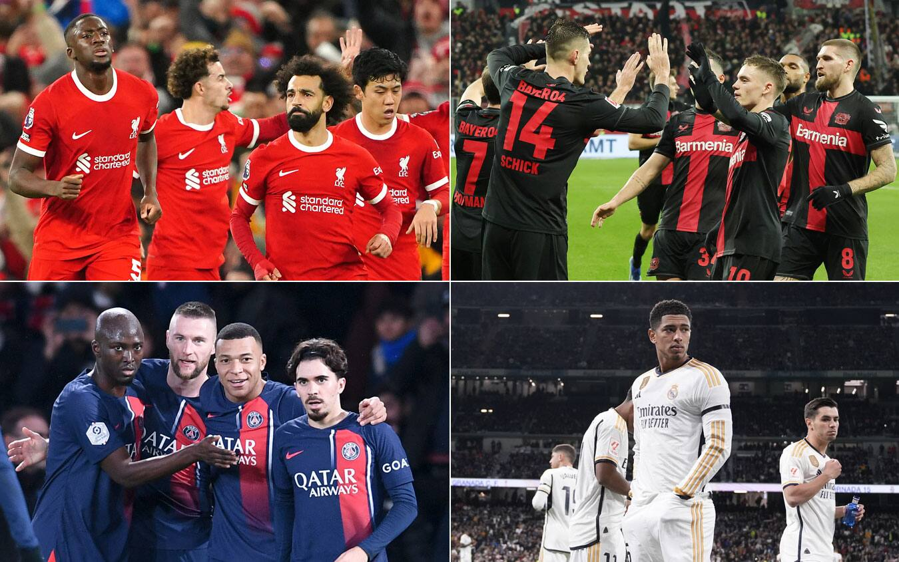

EL FUTBOL
Benvenuti nel nostro sito! Se siete appassionati di calcio europeo,allora siete nel posto giusto!
Qui troverete infatti tutte le informazioni salienti che concernono i top 3 campionati europei nella stagione 2023/2024:dalle classifiche ai marcatori,fino ai migliori allenatori!
serie a:
premier league:
liga:
I bilanci dei Top 3 campionati europei: dominio Premier League, Serie A indietro e con i conti in rosso
quale campionato ha incassato di piu' a livello economico?

Andiamo a vedere la classifica:
1 - Premier League: 8,1 miliardi di euro
2- Liga: 4,9 miliardi
3-Serie A: 3,4 miliardi
Purtroppo la Serie A primeggia nella classifica dei rossi in bilancio, piazzandosi al secondo posto dietro la Premier League.Il campionato inglese è stato anche l'unico che ha visto peggiorare il suo 'rosso' dalla stagione 2022-23 a quella 2023-24. La Serie A è riuscita invece a dimezzarlo, passando dal -941 del 2023 al -441 del 2024.Hanno chiuso invece con un bilancio in attivo sia la Bundesliga che la Liga, con un utile rispettivo di 44 e 260 milioni di euro.
Testo di esempio. Fai clic per selezionare l'Oggetto di Testo.
Gol per partita nei top-5 campionati europei: la Serie A è prima

Sono mediamente 3.16 le reti segnate a partita nel massimo torneo italiano. Seconda la premier,per una media di 2.8 reti per incontro,ultima la Liga, qui, nonostante la prolificità sotto porta di Real Madrid e Barcellona si contano solamente 2.4 marcature a partita.
classifica scarpa d'oro
Scarpa d'Oro 2023-24, la classifica finale: Lautaro fuori dal podio, ecco la sua posizione
La fine dei campionati in giro per l'Europa ha decretato il vincitore della Scarpa d'Oro 2023-24: a trionfare è stato Harry Kane, che nella sua prima stagione al Bayern Monaco - pur con 0 trofei conquistati - ha segnato 36 gol totalizzando 72 punti. Il secondo posto in classifica è di Guirassy dello Stoccarda, con 56 punti frutto di 28 gol. Sul gradino più basso del podio Haaland e Mbappè a pari merito con 27 gol. Al quinto posto c'è Lautaro Martinez, autore di 24 gol così come Openda del Lipsia e Dovby del Girona.